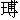

官居極品富千金，享用無多白髮侵。
惟有存仁並積善，千秋不朽在人心。
當初，漢文帝朝中，有個寵臣，叫做鄧通。出則隨輦，寢則同榻，恩幸無比。其時有神相許負，相那鄧通之面，有縱理紋入口，「必當窮餓而死。」文帝聞之，怒曰：「富貴由我！誰人窮得鄧通？」遂將蜀道銅山賜之，使得自鑄錢。當時，鄧氏之錢，布滿天下，其富敵國。一日，文帝偶然生下個癰疽，膿血洴流，疼痛難忍。鄧通跪而吮之，文帝覺得爽快。便問道：「天下至愛者，何人？」鄧通答道：「莫如父子。」恰好皇太子入宮問疾，文帝也教他吮那癰疽。太子推辭道：「臣方食鮮膾，恐不宜近聖恙。」太子出宮去了。文帝嘆道：「至愛莫如父子，尚且不肯為我吮疽，鄧通愛我勝如吾子。」由是恩寵俱加。皇太子聞知此語，深恨鄧通吮疽之事。後來文帝駕崩，太子即位，是為景帝，遂治鄧通之罪，說他吮疽獻媚，壞亂錢法。籍其家產，閉於空室之中，絕其飲食，鄧通果然餓死。又漢景帝時，丞相周亞夫也有縱理紋在口。景帝忌他威名，尋他罪過，下之於廷尉獄中。亞夫怨恨，不食而死。這兩個極富極貴，犯了餓死之相，果然不得善終。然雖如此，又有一說，道是面相不如心相。假如上等貴相之人，也有做下虧心事，損了陰德，反不得好結果。又有犯著惡相的，卻因心地端正，肯積陰功，反禍為福。此是人定勝天，非相法之不靈也。
如今說唐朝有個裴度，少年時，貧落未遇。有人相他縱理入口，法當餓死。後遊香山寺中，於井亭欄干上，拾得三條寶帶。裴度自思：「此乃他人遺失之物，我豈可損人利己，壞了心術？」乃坐而守之。少頃間，只見有個婦人，啼哭而來，說道：「老父陷獄，借得三條寶帶，要去贖罪。偶到寺中盥手燒香，遺失在此。如有人拾取，可憐見還，全了老父之命。」裴度將三條寶帶，即時交付與婦人，婦人拜謝而去。
他日，又遇了那相士。相士大驚道：「足下骨法全改，非復向日餓莩之相，得非有陰德乎？」裴度辭以沒有。相士云：「足下試自思之，必有拯溺救焚之事。」裴度乃言還帶一節。相士云：「此乃大陰功，他日富貴兩全，可預賀也。」後來裴度果然進身及第，位至宰相，壽登耄耋。正是：
面相不如心相準，為人須是積陰功。
假饒方寸難移相，餓莩焉能享萬鍾？
說話的，你只道裴晉公是陰德上積來的富貴，誰知他富貴以後，陰德更多。則今聽我說「義還原配」這節故事，卻也十分難得。
話說唐憲宗皇帝元和十三年，裴度領兵削平了淮西反賊吳元濟，還朝拜為首相，進爵晉國公。又有兩處積久負固的藩鎮，都懼怕裴度威名，上表獻地贖罪：恆冀節度使王承宗，願獻德、隸二州；淄青節度使李師道，願獻沂、密、海三州。憲宗皇帝看見外寇漸平，天下無事，乃修龍德殿，浚龍首池，起承暉殿，大興土木。又聽山人柳泌，合長生之藥。裴度屢次切諫，都不聽。佞臣皇甫

判度支，程異掌鹽鐵，專一刻剝百姓財物，名為羨餘，以供無事之費。由是投了憲宗皇帝之意，兩個佞臣並同平章事。裴度羞與同列，上表求退。憲宗皇帝不許，反說裴度好立朋黨，漸有疑忌之心。裴度自念功名太盛，惟恐得罪。乃口不談朝事，終日縱情酒色，以樂餘年。四方郡牧，往往訪覓歌兒舞女，獻於相府，不一而足。論起裴晉公，那裡要人來獻？只是這班阿諛諂媚的，要博相國歡喜，自然重價購求，也有用強逼取的，鮮衣美飾，或假作家妓，或偽稱侍兒，遣人殷殷勤勤的送來。裴晉公來者不拒，也只得納了。再說晉州萬泉縣，有一人，姓唐，名璧，字國寶，曾舉孝廉科，初任括州龍宗縣尉，再任越州會稽丞。先在鄉時，聘定同鄉黃太學之女小娥為妻。因小娥尚在稚齡，待年未嫁。比及長成，唐璧兩任游宦，都在南方。以此兩下蹉跎，不曾婚配。
那小娥年方二九，生得臉似堆花，體如琢玉，又且通於音律，凡蕭管琵琶之類，無所不工。晉州刺史奉承裴晉公，要在所屬地方選取美貌歌姬一隊進奉。已有五人，還少一個出色掌班的。聞得黃小娥之名，又道太學之女，不可輕得，乃捐錢三十萬，囑托萬泉縣令求之。那縣令又奉承刺史，遣人到黃太學家致意。黃太學回道：「已經受聘，不敢從命。」縣令再三強求，黃太學只是不允。時值清明，黃太學舉家掃墓，獨留小娥在家。縣令打聽的實，乃親到黃家，搜出小娥，用肩輿抬去。著兩個穩婆相伴，立刻送到晉州刺史處交割。硬將三十萬錢撇在他家，以為身價。比及黃太學回來，曉得女兒被縣令劫去，急往縣中，已知送去州裡。再到晉州，將情哀求刺史。刺史道：「你女兒才色過人，一入相府，必然擅寵。豈不勝作他人箕帚乎？況已受我聘財六十萬錢，何不贈與汝婿，別圖配偶？」黃太學道：「縣主乘某掃墓，將錢委置，某未嘗面受，況止三十萬，今悉持在此。某只願領女，不願領錢也。」刺史拍案大怒道：「你得財賣女，卻又瞞過三十萬，強來絮聒，是何道理？汝女已送至晉國公府中矣，汝自往相府取索，在此無益。」黃太學看見刺史發怒，出言圖賴，再不敢開口，兩眼含淚而出。在晉州守了數日，欲得女兒一見，寂然無信。嘆了口氣，只得回縣去了。
卻說刺史將千金置買異樣服飾，寶珠瓔珞，妝扮那六個人，如天仙相似，全副樂器，整日在衙中操演。直待晉國公生日將近，遣人送去，以作賀禮。那刺史費了許多心機，破了許多錢鈔，要博相國一個大歡喜。誰知相府中，歌舞成行，各鎮所獻美女，也不計其數。這六個人，只湊得鬧熱，相國那裡便看在眼裡、留在心裡？從來奉承儘有折本的，都似此類。有詩為證：
割肉剜膚買上歡，千金不吝備吹彈。
相公見慣渾閒事，羞殺州官與縣官！
話分兩頭。再說唐璧在會稽任滿，該得升遷。想黃小娥今已長成，且回家畢姻，然後赴京未遲。當下收拾宦囊，望萬泉縣進發。到家次日，就去謁見岳丈黃太學。黃太學已知為著姻事，不等開口，便將女兒被奪情節，一五一十，備細的告訴了。唐璧聽罷，呆了半晌，咬牙切齒恨道：「大丈夫浮沉薄宦，至一妻之不能保，何以生為？」黃太學勸道：「賢婿英年才望，自有好姻緣相湊，吾女兒自沒福相從，遭此強暴，休得過傷懷抱，有誤前程。」唐璧怒氣不息，要到州官、縣官處，與他爭論。黃太學又勸道：「人已去矣，爭論何益？況干礙裴相國，方今一人之下，萬人之上，倘失其歡心，恐於賢婿前程不便。」乃將縣令所留三十萬錢抬出，交付唐璧道：「以此為圖婚之費。當初宅上有碧玉玲瓏為聘，在小女身邊，不得奉還矣。賢婿須念前程為重，休為小挫以誤大事。」唐璧兩淚交流，答道：「某年近三旬，又失此良偶，琴瑟之事，終身已矣。蝸名微利，誤人之本，從此亦不復思進取也！」言訖，不覺大慟。黃太學也還痛起來。大家哭了一場，方罷。唐璧那裡肯收這錢去，逕自空身回了。
次日，黃太學親到唐璧家，再三解勸，攛掇他早往京師聽調，得了官職，然後徐議良姻。唐璧初時不肯，被丈人一連數日強逼不過，思量：「在家氣悶，且到長安走遭，也好排遣。」勉強擇吉，買舟起程。丈人將三十萬錢暗地放在舟中，私下囑咐從人道：「開船兩日後，方可稟知主人，拿去京中，好做使用，討個美缺。」唐璧見了這錢，又感傷了一場，吩咐蒼頭：「此是黃家賣女之物，一文不可動用！」
在路不一日，來到長安。雇人挑了行李，就裴相國府中左近處，下個店房，早晚府前行走，好打探小娥信息。過了一夜，次早，到吏部報名，送歷任文簿，查驗過了。回寓吃了飯，就到相府門前守候。一日最少也踅過十來遍。住了月餘，那裡通得半個字？這些官吏們一出一入，如馬蟻相似，誰敢上前把這沒頭腦的事問他一聲！正是：
侯門一入深如海，從此蕭郎是路人。
一日，吏部掛榜，唐璧授湖州錄事參軍。這湖州，又在南方，是熟遊之地，唐璧也到歡喜。等有了告敕，收拾行李，雇喚船隻出京。行到潼津地方，遇了一夥強人。自古道「慢藏誨盜」，只為這三十萬錢帶來帶去，露了小人眼目，惹起貪心，就結夥做出這事來。這夥強人從京城外直跟至潼津，背地通同了船家，等待夜靜，一齊下手。也是唐璧命不該絕，正在船頭上登東，看見聲勢不好，急忙跳水，上岸逃命。只聽得這夥強人亂了一回，連船都撐去。蒼頭的性命也不知死活。舟中一應行李，盡被劫去，光光剩個身子。正是：
屋漏更遭連夜雨，船遲又被打頭風。
那三十萬錢和行囊，還是小事，卻有歷任文簿和那告敕，是赴任的執照，也失去了，連官也做不成。唐璧那一時真個是控天無路，訴地無門，思量：「我直恁時乖運蹇，一事無成！欲待回鄉，有何面目？欲待再往京師，向吏部衙門投訴，奈身畔並無分文盤費，怎生是好？這裡又無相識借貸，難道求乞不成？」欲待投河而死，又想：「堂堂一軀，終不然如此結果？」坐在路旁，想了又哭，哭了又想，左算右算，無計可施，從半夜直哭到天明。
喜得絕處逢生，遇著一個老者攜杖而來，問道：「官人為何哀泣？」唐璧將赴任被劫之事，告訴了一遍。老者道：「原來是一位大人，失敬了。舍下不遠，請挪步則個。」老者引唐璧約行一里，到於家中，重復敘禮。老者道：「老漢姓蘇，兒子喚做蘇鳳華，見做湖州武源縣尉，正是大人屬下。大人往京，老漢願少助資斧。」即忙備酒飯管待，取出新衣一套，與唐璧換了；捧出白金二十兩，權充路費。
唐璧再三稱謝，別了蘇老，獨自一個上路，再往京師舊店中安下。店主人聽說路上吃虧，好生淒慘。唐璧到吏部門下，將情由哀稟。那吏部官道是告敕、文簿盡空，毫無巴鼻，難辨真偽。一連求了五日，並不作准。身邊銀兩，都在衙門使費去了。回到店中，只叫得苦，兩淚汪汪的坐著納悶。
只見外面一人，約莫半老年紀，頭帶軟翅紗帽，身穿紫袴衫，挺帶皂靴，好似押牙官模樣，踱進店來。見了唐璧，作了揖，對面而坐，問道：「足下何方人氏？到此貴幹？」唐璧道：「官人不問猶可，問我時，教我一時訴不盡心中苦情！」說未絕聲，撲簌簌掉下淚來。紫衫人道：「尊意有何不美？可細話之，或者可共商量也。」唐璧道：「某姓唐名璧，晉州萬泉縣人氏。近除湖州錄事參軍，不期行至潼津，忽遇盜劫，資斧一空。歷任文簿和告敕都失了，難以之任。」紫衫人道：「中途被劫，非關足下之事，何不以此情訴知吏部，重給告身，有何妨礙？」唐璧道：「幾次哀求，不蒙憐准，教我去住兩難，無門懇告。」紫衫人道：「當朝裴晉公每懷惻隱，極肯周旋落難之人，足下何不去求見他？」唐璧聽說，愈加悲泣道：「官人休題起『裴晉公』三字，使某心腸如割。」紫衫人大驚道：「足下何故而出此言？」唐璧道：「某幼年定下一房親事，因屢任南方，未成婚配。卻被知州和縣尹用強奪去，湊成一班女樂，獻與晉公，使某壯年無室。此事雖不由晉公，然晉公受人諂媚，以致府縣爭先獻納，分明是他拆散我夫妻一般，我今日何忍復往見之？」紫衫人問道：「足下所定之室，何姓何名？當初有何為聘？」唐璧道：「姓黃，名小娥，聘物碧玉玲瓏，見在彼處。」紫衫人道：「某即晉公親校，得出入內室，當為足下訪之。」唐璧道：「侯門一入，無復相見之期。但願官人為我傳一信息，使他知我心事，死亦瞑目。」紫衫人道：「明日此時，定有好音奉報。」說罷，拱一拱手，踱出門去了。
唐璧輾轉思想，懊悔起來：「那紫衫押牙，必是晉公親信之人，遣他出外探事的。我方纔不合議論了他幾句，頗有怨望之詞，倘或述與晉公知道，激怒了他，降禍不小。」心下好生不安，一夜不曾合眼。
巴到天明，梳洗罷，便到裴府窺望。只聽說令公給假在府，不出外堂。雖然如此，仍有許多文書來往，內外奔走不絕，只不見昨日這紫衫人。等了許多，回店去吃了些午飯，又來守候，絕無動靜。看看天晚，眼見得紫衫人已是謬言失信了。嗟嘆了數聲，淒淒涼涼的回到店中。
方欲點燈，忽見外面兩個人似令史妝扮，慌慌忙忙的走入店來，問道：「那一位是唐璧參軍？」唬得唐璧躲在一邊，不敢答應。店主人走來問道：「二位何人？」那兩個人答曰：「我等乃裴府中堂吏，奉令公之命，來請唐參軍到府講話。」店主人指道：「這位就是。」唐璧只得出來相見了，說道：「某與令公素未通謁，何緣見召？且身穿褻服，豈敢唐突。」堂吏道：「令公立等，參軍休得推阻。」
兩個左右腋扶著，飛也似跑進府來。到了堂上，教：「參軍少坐，容某等稟過令公，卻來相請。」兩個堂吏進去了。不多時，只聽得飛奔出來，復道：「令公給假在內，請進去相見。」一路轉彎抹角，都點得燈燭輝煌，照耀如白日一般。兩個堂吏前後引路，到一個小小廳事中。只見兩行紗燈排列，令公角巾便服，拱立而待。唐璧慌忙拜伏在地，流汗浹背，不敢仰視。令公傳命扶起道：「私室相延，何勞過禮？」便教看坐。唐璧謙讓了一回，坐於旁側，偷眼看著令公，正是昨日店中所遇紫衫之人，愈加惶懼，捏著兩把汗，低了眉頭，鼻息也不敢出來。
原來裴令公閑時常在外面私行耍子，昨日偶到店中，遇了唐璧。回府去，就查「黃小娥」名字，喚來相見，果然十分顏色。令公問其來歷，與唐璧說話相同。又討他碧玉玲瓏看時，只見他緊緊的帶在臂上。令公甚是憐憫，問道：「你丈夫在此，願一見乎？」小娥流淚道：「紅顏薄命，自分永絕。見與不見，權在令公，賤妾安敢自專？」令公點頭，教他且去。密地吩咐堂候官，備下資裝千貫；又將空頭告敕一道，填寫唐璧名字，差人到吏部去，查他前任履歷及新授湖州參軍文憑，要得重新補給。件件完備，纔請唐璧到府。唐璧滿肚慌張，那知令公一團美意？
當日令公開談道：「昨見所話，誠心惻然。老夫不能杜絕餽遺，以致足下久曠琴瑟之樂，老夫之罪也。」唐璧離席下拜道：「鄙人身遭顛沛，心神顛倒，昨日語言冒犯，自知死罪，伏惟相公海涵！」令公請起道：「今日頗吉，老夫權為主婚，便與足下完婚。薄有行資千貫奉助，聊表贖罪之意。成親之後，便可于飛赴任。」唐璧只是拜謝，也不敢再問赴任之事。只聽得宅內一派樂聲嘹亮，紅燈數對，女樂一隊前導，幾個押班老嬤和養娘輩，簇擁出如花如玉的黃小娥來。唐璧慌欲躲避，老嬤道：「請二位新人就此見禮。」養娘鋪下紅氈，黃小娥和唐璧做一對兒立了，朝上拜了四拜，令公在旁答揖。早有肩輿在廳事外，伺候小娥登輿，一逕抬到店房中去了。令公吩咐唐璧：「速歸逆旅，勿誤良期。」唐璧跑回店中，只聽得人言鼎沸。舉眼看時，擺列得絹帛盈箱，金錢滿篋，就是起初那兩個堂吏看守著，專等唐璧到來，親自交割。又有個小小篋兒，令公親判封的。拆開看時，乃官誥在內，復除湖州司戶參軍。唐璧喜不自勝，當夜與黃小娥就在店中，權作洞房花燭。這一夜歡情，比著尋常畢姻的，更自得意。正是：
運去雷轟薦福碑，時來風送滕王閣。
今朝婚宦兩稱心，不似從前情緒惡。
唐璧此時有婚有宦，又有了千貫資裝，分明是十八層地獄的苦鬼，直升到三十三天去了。若非裴令公仁心慷慨，怎肯周旋得人十分滿足？
次日，唐璧又到裴府謁謝。令公預先吩咐門吏辭回：「不勞再見。」唐璧回寓，重理冠帶，再整行裝。在京中買了幾個僮僕跟隨，兩口兒回到家鄉，見了岳丈黃太學，好似枯木逢春，斷弦再續，歡喜無限。過了幾日，夫婦雙雙往湖州赴任。感激裴令公之恩，將沉香雕成小像，朝夕拜禱，願其福壽綿延。後來裴令公壽過八旬，子孫蕃衍，人皆以為陰德所致。詩云：
無室無官苦莫論，周旋好事賴洪恩。
人能步步存陰德，福祿綿綿及子孫。
本章完!